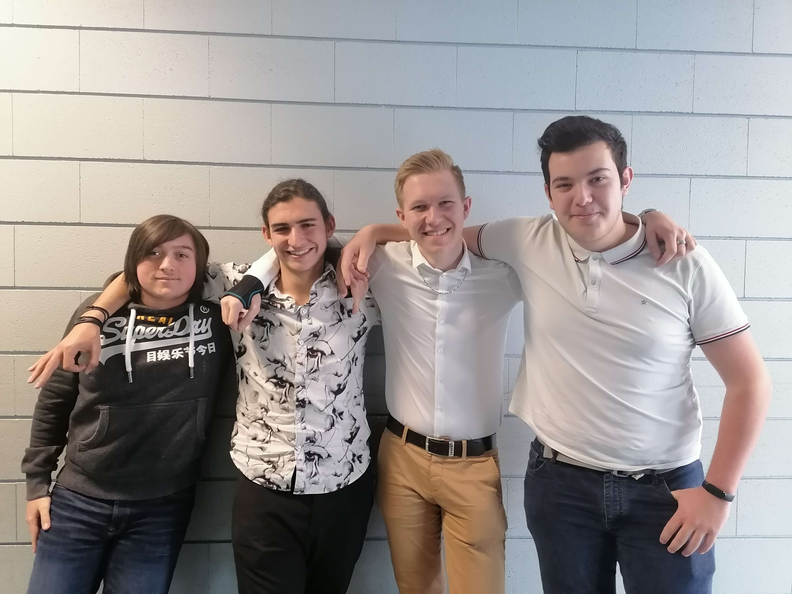

Qu’est-ce-que Nastruire ?
Nastruire est né d'une collaboration entre amis passionnés d'informatique, initié lors d'un concours lancé en
février 2022. C’est après trois mois de développement, qu’un jeu vidéo visant à sensibiliser à la protection
de l'environnement, en mettant l'accent sur l'éducation des jeunes est né.
Ce sont donc deux cartes que les joueurs pourront choisir en ayant l’objectif de collecter 50 déchets. A
chaque ramassage, des informations sont donnée sur la décomposition et l’impact environnemental de chaque
déchet.
Outre la sensibilisation sur le recyclage, Nastruire propose également des cours sur l’informatique
en lien avec la passion de notre équipe. Internet devenant de plus en plus vaste, dangereux et difficile à
comprendre, il est important d’avoir les bases pour s’initier dans ce domaine.

Qui sommes-nous ?
Nous sommes un groupe d'amis qui se sont rencontrés en classe de terminal et qui sont
devenus d'excellent ami. Nous avons le même but, rentrer dans nos écoles informatiques et devenir
d'excellent programmeur. Dans ce groupe nous avons Evan, Simon, Thibault et Bastien.

Evan Lamy
C'est le plus jeune du groupe et il souhaite intégrer une école informatique de
programmation. C'est un passionné de jeu vidéo, d'informatique, de musique et d'animation,
il pratique de la guitare. Son plus grand rêve est de trouver un travail dans une entreprise
de jeu vidéo et de vivre heureux.
Simon Goy
Il a 18 ans et il souhaite pouvoir intégrer une école d'ingénieur. C'est un passionné
d'informatique, de musique, il pratique la guitare et la basse. Son plus grand rêve est de
créer une application utilisée par un grand groupe.
Thibault Liotard
Il a 18 ans et il est déjà pris dans son école de programmation de jeu vidéo. C'est un
passionné informatique et de jeu vidéo. Son plus grand rêve est de créer sa propre
entreprise de jeu vidéo et souhaite devenir entrepreneur.
Bastien Bonora
Il a 18 ans et il souhaite pouvoir intégrer une école de télécommunication. C'est un
passionné de jeu vidéo, d'informatique et de hacking. Son plus grand rêve est de devenir un
hacker éthique.